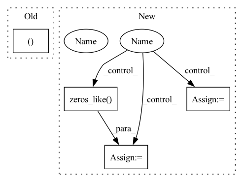

Pattern ID :16534

Before Change
mask = np.broadcast_to(mask, mask_shape)[np.newaxis, ...].copy() // Add coil axis, make array writable.
if self.return_parameters:
return torch.from_numpy(mask), acceleration, center_fraction
return torch.from_numpy(mask)
After Change
mask = np.broadcast_to(mask, mask_shape)[np.newaxis, ...].copy() // Add coil axis, make array writable.
// TODO: Think about making this more efficient.
if return_acs:
acs_mask = np.zeros_like(mask)
acs_mask[:, :, pad:pad + num_low_freqs, ...] = 1
return torch.from_numpy(acs_mask)
return torch.from_numpy(mask)
In pattern: SUPERPATTERN
Frequency: 4
Non-data size: 4
Instances
Fragment ID: 55658165
Project Name: directgroup/direct
Commit Name: 1ef1497464927f7c4991653b6a67bcb5b5b6790d
Time: 2020-06-30
Author: jonasteuwen@gmail.com
File Name: direct/common/subsample.py
M Class Name: FastMRIMaskFunc
N Class Name: FastMRIMaskFunc
M Method Name: mask_func(3)
N Method Name: mask_func(2)
M Parent Class: BaseMaskFunc
N Parent Class: BaseMaskFunc
M File Name: direct/common/subsample.py
N File Name: direct/common/subsample.py
M Start Line: 145
M End Line: 148
N Start Line: 104
N End Line: 168
'>
Before Change
log_std = self.std_clamp(log_std)
return mean, log_std
if __name__ == "__main__":
use_cuda = torch.cuda.is_available()
After Change
mean, log_std = torch.split(x, x.shape[1] // 2, dim=1)
if deterministic:
action = mean
std = torch.zeros_like(log_std)
else:
// todo: is clamp really necessary?
log_std = self.std_clamp(log_std)
std = log_std.exp()
m = MultivariateNormal(mean.reshape(-1), torch.diag(std.reshape(-1)))
action = m.sample()
action = action.reshape(mean.shape)
action = action.tanh()
'>
Fragment ID: 55658164
Project Name: tmdt-buw/karolos
Commit Name: 39ca64b6106c80c48f0605a15cde575769fad233
Time: 2020-04-23
Author: scheiderer@uni-wuppertal.de
File Name: agents/nnfactory/sac.py
M Class Name: Policy
N Class Name: Policy
M Method Name: forward(3)
N Method Name: forward(2)
M Parent Class: nn.Module
N Parent Class: nn.Module
M File Name: agents/nnfactory/sac.py
N File Name: agents/nnfactory/sac.py
M Start Line: 100
M End Line: 102
N Start Line: 95
N End Line: 115
'>
Before Change
mask = np.broadcast_to(mask, mask_shape)[np.newaxis, ...].copy() // Add coil axis, make array writable.
if self.return_parameters:
return torch.from_numpy(mask), acceleration, center_fraction
return torch.from_numpy(mask)
After Change
mask = np.broadcast_to(mask, mask_shape)[np.newaxis, ...].copy() // Add coil axis, make array writable.
// TODO: Think about making this more efficient.
if return_acs:
acs_mask = np.zeros_like(mask)
acs_mask[:, :, pad:pad + num_low_freqs, ...] = 1
return torch.from_numpy(acs_mask)
return torch.from_numpy(mask)
'>
Fragment ID: 55658170
Project Name: directgroup/direct
Commit Name: a405500b808b66d927ce40851039a40fb81f72b6
Time: 2020-06-30
Author: jonasteuwen@gmail.com
File Name: direct/common/subsample.py
M Class Name: FastMRIMaskFunc
N Class Name: FastMRIMaskFunc
M Method Name: mask_func(3)
N Method Name: mask_func(2)
M Parent Class: BaseMaskFunc
N Parent Class: BaseMaskFunc
M File Name: direct/common/subsample.py
N File Name: direct/common/subsample.py
M Start Line: 145
M End Line: 148
N Start Line: 104
N End Line: 168
'>
Before Change
spike_data = delta_conv(data, threshold, padding, off_spike)
if targets is not False:
return spike_data, target_handling(
targets, num_outputs, num_steps, time_varying_targets
)
else:
return spike_data
After Change
:type off_spike: bool, optional
if padding:
data_offset = torch.cat((data[0].unsqueeze(0), data))[
:-1
] // duplicate first time step, remove final step
else:
data_offset = torch.cat((torch.zeros_like(data[0]).unsqueeze(0), data))[
:-1
] // add 0"s to first step, remove final step
'>
Fragment ID: 55658172
Project Name: jeshraghian/snntorch
Commit Name: 06e956863e89a61d47de2c9bfcda311c4d61056e
Time: 2021-05-05
Author: 40262130+jeshraghian@users.noreply.github.com
File Name: snntorch/spikegen.py
M Class Name: AnonimousClass
N Class Name: AnonimousClass
M Method Name: delta(4)
N Method Name: delta(8)
M Parent Class:
N Parent Class:
M File Name: snntorch/spikegen.py
N File Name: snntorch/spikegen.py
M Start Line: 236
M End Line: 298
N Start Line: 225
N End Line: 278